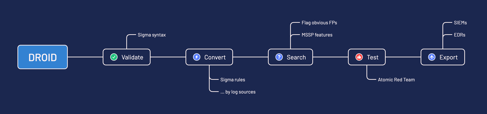

droid
droid enables Detection as Code using Sigma. Keep your detection rules as Sigma in a Git repository, and droid validates them, converts them for each of your platforms, searches your logs with them and deploys them to your SIEM and EDR, from your laptop or your CI/CD pipeline.
Built on pySigma, droid also handles rules written directly in a platform's query language, the raw rules.

-
Set up in minutes
Install
detect-droidwithpip, add the pySigma backends of your platforms, and convert your first rules. -
Detection as Code
Review, version and roll back your detection rules like code, and let your CI/CD pipeline test and deploy them.
-
Made to measure
Map each log source to your data with its own pipelines, and tune schedules, suppression and actions per platform, log source or rule.
-
Open source, EUPL
droidis licensed under the EUPL and developed in the open on GitHub.
Features
- Validate the syntax and the quality of your Sigma rules with the pySigma validators
- Convert them for each platform, with the pipelines you set per log source
- Search your logs with them, and report the hits before going live
- Export them to your platforms: create, update, disable and remove detection rules
- Check the integrity of what runs on a platform against your repository
- Correlate with Sigma correlation rules
- Serve one log source from several telemetry sources, each converted with its own pipelines, see Log source variants
- Manage several tenants (MSSP) with per customer filters
- Update your rules from upstream sources such as SigmaHQ
Supported platforms
| Platform | --platform |
Search | Export | Integrity | Rule actions | MSSP |
|---|---|---|---|---|---|---|
| Splunk | splunk |
✅ | ✅ | ✅ | Email, webhook | |
| Microsoft Sentinel | microsoft_sentinel |
✅ | ✅ | ✅ | ✅ | |
| Microsoft Defender XDR | microsoft_xdr |
✅ | ✅ | ✅ | Response actions on users, files and devices | ✅ |
| Elastic Security (ES|QL) | esql |
✅ | ✅ | ✅ | Index, server log, email, webhook | |
| Elastic Security (EQL) | eql |
✅ | ✅ | ✅ | Index, server log, email, webhook |
Info
Each platform needs its pySigma backend, see Getting started. Your platform is missing? Contributions are welcome.
At a glance
droid rules validate -r sigma-rules/ -c droid_config.toml # check your rules
droid rules convert -r sigma-rules/ -c droid_config.toml -p splunk # see the queries they become
droid rules search -r sigma-rules/ -c droid_config.toml -p splunk # search your logs with them
droid rules export -r sigma-rules/ -c droid_config.toml -p splunk # deploy them
droid rules integrity -r sigma-rules/ -c droid_config.toml -p splunk # check what runs on the platform
Resources
- Sigma Unleashed: A Realistic Implementation, FIRST 2024
- droid-init, a repository to start your detection rules from